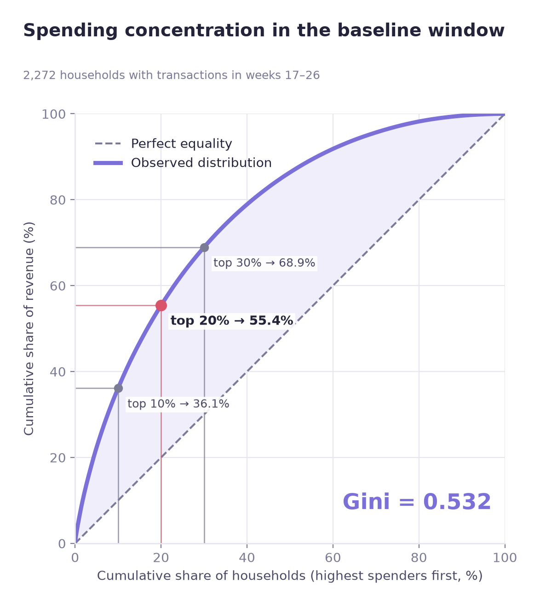
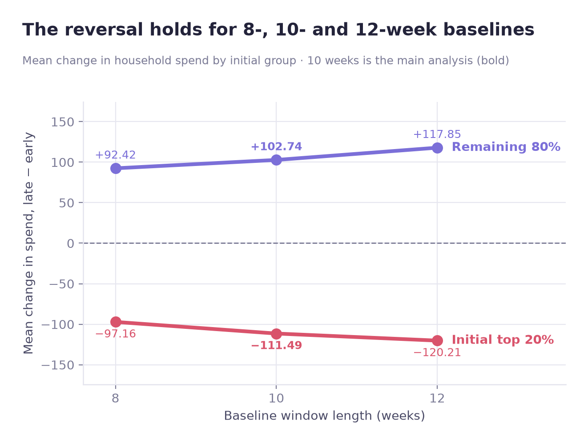
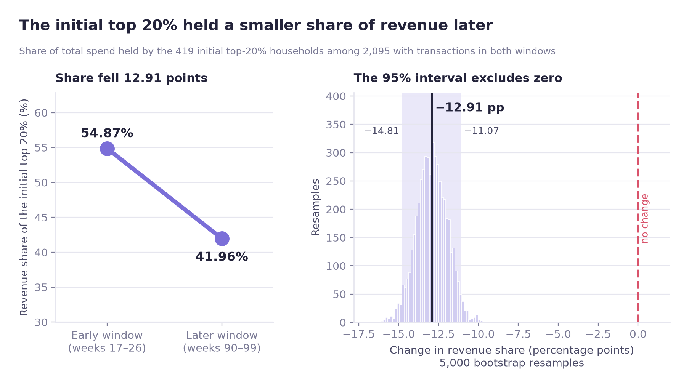
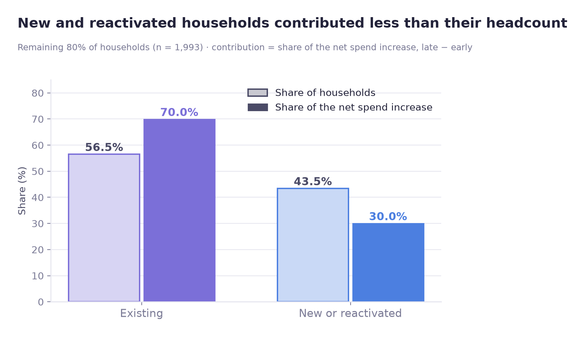
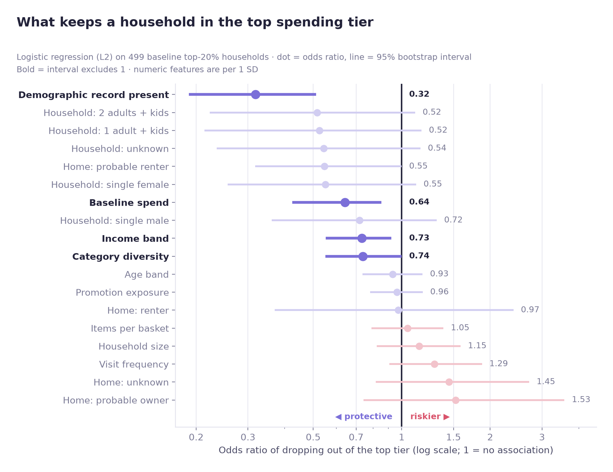
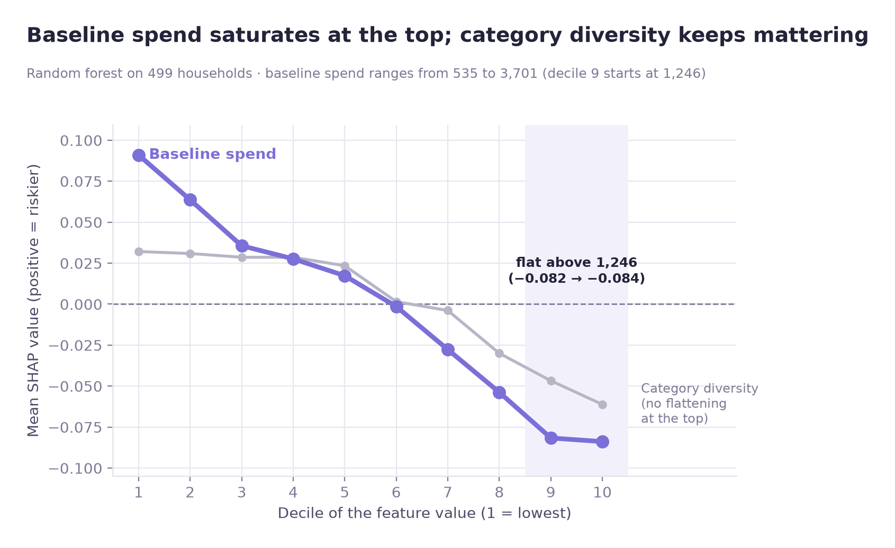

00
Executive summary
The whole case in one screen
The hypothesis was that revenue growth came from heavy spenders spending more. The data says the opposite — the initial top 20% spent less in weeks 90–99 than in weeks 17–26. This compares two windows and does not rule out regression to the mean.
The claim under test. Revenue growth is concentrated in a small group of high-value households. If true, the top spenders should have grown in both absolute spend and share of revenue.
Three results, one direction
| Test | Result (median change; share change in pp) | What it means |
|---|---|---|
| Top 20% · absolute spend | −131.45 | Heavy spenders shrank, not grew |
| Remaining 80% · absolute spend | +36.49 | The increase was among everyone else |
| Top 20% · revenue share | −12.91 pp | The top group's share of revenue fell |
Tests A and B (the first two rows) are two of the three household-level tests A–C that are corrected together with Bonferroni (α = 0.05 / 3 ≈ 0.0167; test C, the between-group Mann-Whitney U, appears in section 05). The last row is test D, whose 95% bootstrap interval for the share change excludes zero. All three rows use the H4-1 panel (2,095 households; 419 in the top 20%, 1,676 in the remaining 80%). The hypothesis is rejected in both framings — absolute spend and revenue share.
Key findings
The reversal does not depend on where the baseline was drawn. Re-running with 8-, 10- and 12-week baselines never flips the sign. This is a sensitivity check; it does not rule out regression to the mean.
New and reactivated households cluster outside the top 20% — 43.5% of the remaining 80%, against 13.6% of the top 20% (wide panel: 2,492 households with transactions in weeks 17–99; top 20% = 499, remaining 80% = 1,993). That association is clear (Cramér's V = 0.246).
But association is not contribution. In the wide panel (households with no baseline transactions have their baseline spend set to 0), those households are 43.5% of the remaining 80% (1,993 households) by headcount and only 30.0% of that group's net spending increase. Most of the increase came from existing households, not from new or reactivated ones.
Exploratory modelling looked at which baseline features are associated with falling out of the top tier. Having a demographic record shows the clearest association (OR 0.32, 95% CI 0.19–0.51); visit frequency shows no established association (OR 1.29, CI 0.91–1.87 includes 1).
What this changes
Look beyond the top 20%
In this data the spending increase is among households outside the initial top 20%, and mostly among existing customers (wide panel, 2,492 households; remaining 80% = 1,993). A retention strategy aimed only at the highest historical spenders ignores where most of the observed increase was.
At a glance
01
Overview
What was tested, and why the answer mattered
A familiar assumption is that a small group of heavy spenders carries the revenue, so growth must be coming from them.
This case checks it. Using household transaction data from an 83-week stable period and comparing two 10-week windows (weeks 17–26 and 90–99), it asks whether the households that were already heavy spenders at the start actually grew — in absolute spend and in share of total revenue — and if not, where the growth came from instead.
Scope
This was a team project covering several hypotheses. H4 was mine — from methodology design through statistical testing to the exploratory model. Everything on this page is that work.
Why it is not a trivial question
The obvious test is circular. Define "top spenders" using the full period and you end up measuring "did the households that grew get classified as high-spending" — which answers itself. The design has to prevent that before any test runs.
The answer changes where retention budget goes. If growth is concentrated in heavy spenders, protect them. If it is not, a programme aimed only at them is aimed at the contracting group.
02
Business question
One hypothesis, split into two testable claims
H4 — Revenue growth is concentrated in a small group of high-spending households
| # | Claim | How it would be falsified |
|---|---|---|
| H4-1 | For the top X% of households fixed on the baseline window, both revenue share and absolute spend increased later | Either measure failing to increase |
| H4-2 | Top-spender status is associated with new / reactivated status | No association in the contingency table |
Households in data
2,500
Stable period
83 weeks
Baseline window
10 weeks
Threshold
top 20%
03
Data
Where the numbers come from, and the two thresholds that had to be chosen
Source
Dunnhumby "The Complete Journey" — household-level transaction records for 2,500 households, with demographic, campaign, coupon and product tables alongside. The analysis uses a stable 83-week period (weeks 17–99). Of the 2,500 households, 2,492 have transactions in weeks 17–99; the steps below use different subsets: 2,272 for the concentration measures, 2,095 for the H4-1 tests, 2,492 for the cross-table and the model.
The dataset was used for educational portfolio purposes. All analysis, statistical testing, interpretations, and recommendations were independently developed as part of this project.
Two numbers in this analysis are choices, not facts — how long the baseline window is, and where "top X%" is cut. Both were checked against the data before being fixed.
Choice 1 · How long should the baseline window be?
Too short and households are ranked on noise; too long and it eats the period being measured. For each candidate length, the window was split into odd and even weeks, households ranked independently in each half, and the two rankings correlated — a direct measure of how reproducible the ranking is at that length.
Elbow
10 weeks
Rank correlation
ρ = 0.697
Cap applied
≤ 15% of period
Reported honestly: there was no sharp elbow. ρ = 0.697 is moderate, so the top-X% roster carries real noise. That is why the sensitivity check in section 05 matters for how far the result can be trusted.
Choice 2 · Where is the top X% cut?
Rather than reaching for the conventional 20%, the actual concentration of spending was measured first.
| Measure | Value |
|---|---|
| Gini coefficient | 0.532 |
| Revenue held by the top 10% | 36.1% |
| Revenue held by the top 20% | 55.4% |
| Revenue held by the top 30% | 68.9% |
This is not the textbook Pareto distribution. The 80/20 rule would put 80% of revenue in the top 20%; here it is 55.4% (2,272 households with transactions in weeks 17–26). Spending is concentrated, but the rest of the distribution still carries real weight. Elbow detection put the cut at 18%, close enough to convention that 20% was adopted.

One decision not to clean the data
An IQR rule flagged 7.34% of transaction values as outliers. That was read as "IQR is the wrong tool for a right-skewed spending distribution" rather than as a data problem — and more decisively, this hypothesis is about high-spending households. Removing them would delete the signal being tested. All observations were kept and rank-based tests used instead.
04
Methodology
The rule that governs the design, and how the tests were chosen
The anti-circularity rule
"Top X%" is fixed using baseline-window data only, and never recomputed.
If later-period data enters the definition, the question silently changes from "did households that were already heavy spenders grow?" to "did the households that grew get classified as heavy spenders?" — which is guaranteed to come back positive regardless of what is true. Every downstream result depends on this one rule holding.
Test selection was driven by the distribution, not by preference
| Check | Result | Consequence |
|---|---|---|
| Normality (Shapiro-Wilk) | Rejected in both groups | No parametric mean tests |
| Equal variance (Levene) | Rejected — top-20% variance over 3× the rest | No pooled-variance t-test |
| Decision | Wilcoxon signed-rank for within-group change, Mann-Whitney U between groups, bootstrap for the share metric | |
Three related household-level tests (A–C) mean a Bonferroni correction: α = 0.05 / 3 ≈ 0.0167. All three clear that threshold, not the uncorrected 0.05. The existing-versus-new comparison in section 05-C is judged against a stricter threshold of α = 0.05 / 4 = 0.0125 (the threshold used in that notebook).
Why the share metric needed a different tool
Revenue share is a group-level ratio, not a value per household, so rank-based tests do not apply. A bootstrap over 5,000 resamples was used to build the interval directly.
Why a sensitivity check was run
The first result ran opposite to the hypothesis. Before reporting that, the obvious alternative — regression to the mean — had to be examined, so a robustness check on the baseline length was run.
05
Analysis
Three findings, in the order they were established
A · The direction reversed — and survived the check
Comparing spending change per household between the baseline and later windows returned the opposite of what H4-1 predicts: the remaining 80% up, the top 20% down. The question was immediately whether this was a statistical artifact rather than a pattern.
| Baseline length | Remaining 80% (mean change) | Top 20% (mean change) |
|---|---|---|
| 8 weeks | +92.42 | −97.16 |
| 10 weeks | +102.74 | −111.49 |
| 12 weeks | +117.85 | −120.21 |
The sign never flips, and the gap between the groups grows slightly as the baseline lengthens. This is a sensitivity check, not a full identification strategy: it does not rule out regression to the mean. Membership is fairly stable: Jaccard overlap between the three rosters runs 0.76–0.86.

Stated at the strength the evidence supports: the sign of the result is stable across the 8-, 10- and 12-week baselines; regression to the mean cannot be ruled out. The pattern is a convergence of spending levels.
B · Both framings agree — spend and share
| Test | Statistic | Effect size | Verdict |
|---|---|---|---|
| Top 20% changed (Wilcoxon) | p = 0.00002 | r = −0.209 | decreased |
| Remaining 80% changed (Wilcoxon) | p = 8.8 × 10⁻³¹ | — | increased |
| Groups differ (Mann-Whitney U) | p = 3.3 × 10⁻²⁰ | r = 0.290 | confirmed |
| Share of top 20% (bootstrap) | −12.91 pp | CI excludes 0 | fell |
The most readable figure is the common-language effect size on the between-group test: 0.355, where 0.5 would mean no difference. Pick one household from each group at random: the top-20% household grew more in 35.5% of pairs, against 50% if there were no difference.

C · Association is not contribution
Since the observed increase was among the remaining 80%, the next question is whether it was accounted for by new and reactivated households arriving or by existing households spending more. A contingency table answers the first half.
| Group | Existing | New / reactivated |
|---|---|---|
| Remaining 80% | 1,127 (56.5%) | 866 (43.5%) |
| Top 20% | 431 (86.4%) | 68 (13.6%) |
This table covers the 2,492 households with transactions in weeks 17–99 (499 in the top 20%, early spend ≥ 535.29), a different cut from the 419-household group above. The other eight of the 2,500 (seven existing, one reactivated) have no transactions in that period and are not in the table.
Chi-square p = 1.5 × 10⁻³⁴, Cramér's V = 0.246 — a moderate, clear association. New and reactivated households sit overwhelmingly in the remaining 80% (866 of 934).
But a contingency table is an association, not a contribution
Two readings remain compatible with that table: either these households accounted for a large part of the additional revenue, or they simply spend less on average and therefore cluster in the lower group. Separating them requires computing their actual share of the net increase.
| Cohort | Share of headcount (remaining 80%) | Share of net increase (remaining 80%) | Median change |
|---|---|---|---|
| Existing | 56.5% | 70.0% | +51.78 |
| New / reactivated | 43.5% | 30.0% | +10.26 |
Contribution comes in below headcount. New and reactivated households are 43.5% of the group but 30.0% of its net increase — the median change for existing households is about 5 times as large as for new and reactivated ones (+51.78 vs +10.26); the means are +119.96 vs +67.07.

A case of significant ≠ important
Testing the two cohorts directly returns p = 0.000928 — below the stricter threshold of α = 0.0125 used for this comparison. But the effect size is rank-biserial 0.086, with a common-language figure of 0.457 against a null of 0.5. With 1,993 households the test reaches significance on a difference with a small effect size. Reporting only the p-value here would have been misleading.
06
Results
The verdict on both claims, and what the model added
H4-1 rejected
Both framings show the top 20% contracting (H4-1 panel, 2,095 households; top 20% = 419) — absolute spend down a median 131.45, revenue share down 12.91 points. What the data supports instead is a convergence pattern: the initial top 20% spent less and the remaining 80% spent more in the later window.
H4-2 supported, but reframed
The association holds (Cramér's V = 0.246). The contribution does not follow from it — in the wide panel (2,492 households), 70% of the net spending increase within the remaining 80% (1,993 households) still came from existing households. Within the remaining 80%, most of the observed increase came from existing households, not from new or reactivated ones.
Exploratory retention-risk modelling
Statistical testing establishes what happened. It does not say who it happens to next. A model was built on the 499 households (of 2,492 with transactions in weeks 17–99) that were in the top 20% at baseline, predicting whether they were still there at the end — positioned as exploratory, because 499 rows is small and the goal is to surface risk factors rather than ship a scorer.
No temporal leakage
features ← weeks 17–26 · target ← weeks 90–99
Every feature was constructed from the baseline window only; the target was defined from the later window only, by recomputed rank rather than by raw change. No later-period information enters the feature set at any point.
| Model | PR-AUC | Verdict |
|---|---|---|
| Random baseline | 0.447 | Equal to the positive rate |
| Logistic regression | 0.685 | Selected — higher recall (0.601 vs 0.529) and interpretable |
| Random forest | 0.657 | Lower recall (0.529 vs 0.601); a sample of 499 may be too small for a tree model |
PR-AUC and recall, not accuracy, were the main metrics. If missing an at-risk household costs more than one extra retention message, recall should carry more weight; campaign costs were not available, so no profit-optimal threshold was identified. For this dataset and sample size, logistic regression is the preferred model: it missed 89 of 223 households that fell out (40%), the forest 105 (47%).

Two findings from the logistic model
Having a demographic record shows the clearest association with staying in the top tier (OR = 0.32, 95% CI 0.19–0.51). It may be standing in for engagement, but this does not show that having a record keeps a household in the top tier.
Visit frequency shows no established association after accounting for the other variables in the model (OR 1.29 per 1 SD, 95% CI 0.91–1.87, which includes 1). The point estimate leans toward higher risk, but it should not be read as a risk factor.
The two model families overlap considerably
SHAP importance from the random forest overlaps considerably with the logistic results: four of its top five features (demographic record, baseline spend, category diversity, income band) are also logistic variables whose interval excludes 1 (category diversity only borderline, upper bound 0.998).
The forest can also show nonlinear patterns that a linear logistic model does not, such as a flattening at high baseline spend.

Is the model learning anything real?
permutation test p = 0.001 (1,000 permutations, the smallest attainable value) · beats the stratified dummy baseline (PR-AUC 0.4325) · no sign of a large train/validation gap
The permutation test suggests performance beyond randomly permuted outcomes, and there is no sign of a large train/validation gap. Validation PR-AUC is flat over the last five training sizes (0.680–0.687), which does not suggest that many more households would change the picture; performance on a future period or another retailer is untested.
07
Business insights
What the numbers mean for the people spending the budget
① The growth is outside the top 20%
The observed spending increase is in the remaining 80%. In the wide panel (2,492 households; remaining 80% = 1,993), most of it (70.0%) came from existing households. A strategy built only on protecting initial heavy spenders targets a group whose median spending fell by 131.45 (H4-1 panel, 2,095 households; top 20% = 419).
② New and reactivated households contributed less than their headcount
In the wide panel, new and reactivated households are 43.5% of the remaining 80% (1,993 households) but 30% of its net spending increase. This is an accounting decomposition; it does not show whether acquisition efforts worked or where budget should go.
③ Having a demographic record is associated with staying in the top tier
Having a demographic record shows the clearest association (OR 0.32); baseline spend is also associated (OR 0.64 per 1 SD), but the two are on different scales and are not ranked. It may be worth checking as a possible engagement marker; this data cannot show whether disengagement leads or follows a spending decline.
④ The model's response to baseline spend flattens at the top
In the random forest, the association between baseline spend and predicted risk flattens above roughly 1,250 in early spend. Category diversity does not flatten at the top. This describes the model's predictions; it does not show that retention effort near any threshold produces more.
Recommendations
01 Test re-pointing the retention programme beyond the top 20%
- Who
- CRM and loyalty programme owners
- What
- Test shifting budget weighting away from a pure top-20% definition toward existing households outside the top 20% — a hypothesis to evaluate, not a result of this analysis
- Why
- In the H4-1 panel (2,095 households), the top 20% contracted by a median 131.45 while the remaining 80% grew by a median 36.49. A top-20% definition would not target the households where the observed increase was
- How to verify
- Hold out a matched portion of households outside the top 20% from the re-pointed programme and compare retention two periods later
02 Check whether lacking a demographic record signals falling out of the top tier
- Who
- Retention analytics; customer insight teams
- What
- Track whether households have a demographic record and how they engage with non-purchase touchpoints — profile completion, programme interactions — alongside spending, to check whether these carry information about who falls out of the top tier
- Why
- Having a demographic record showed the clearest association with staying in the top tier in the model (OR = 0.32, 95% CI 0.19–0.51). Numeric variables are per 1 SD and binary ones are 0 vs 1, so odds ratios are not ranked by size
- Caveat
- This is an association in a 499-household exploratory model. It justifies instrumenting the signal, not automating decisions on it, and this data cannot show whether disengagement leads or follows a spending decline
03 Stop reporting revenue concentration without a trend
- Who
- Commercial reporting
- What
- Report the top-20% revenue share as a series, not a snapshot. In the concentration sample (2,272 households with transactions in weeks 17–26) the top 20% held 55.4% of revenue at baseline; the 419 initial top-20% households of the 2,095-household H4-1 panel held 54.87% at baseline and 41.96% in weeks 90–99, a 12.91-point decline
- Why
- A single snapshot of concentration cannot show whether the baseline top group's share is rising or falling
08
Limitations
What this cannot support
The analysis documents a convergence pattern. It does not explain why it happened, and it is not a causal study.
Contribution analysis is not causal inference
Section 05-C decomposes where the increase came from. It establishes no counterfactual — nothing here says what would have happened without new and reactivated households.
Moderate baseline reliability
The odd/even rank correlation at the chosen window was ρ = 0.697, so the top-X% roster is defined under real noise. The sensitivity check mitigates this but does not remove it. Rank-based group selection can also produce regression-to-the-mean effects even with the baseline fixed and sensitivity-tested.
Small sample in the modelling stage
499 households is small for a tree ensemble, and fold-to-fold variance is visible even in logistic regression. That is why this stage is framed as exploratory rather than predictive. The target is staying in the top 20% by spend, not customer churn.
The mechanism is unexplained
The convergence is documented but not accounted for. Whether it reflects high-value attrition, competitive substitution, or broad growth in the lower tiers cannot be separated with this data.
Observational throughout
No randomisation, no known assignment mechanism. Every result is an adjusted association rather than an established effect.
One panel, one retailer
2,500 households of a single retailer; 2,492 of them have transactions in the 83-week period. The convergence pattern may be specific to this business, this period, or this customer base.
09
Tools & Skills
What was used, and for what
Programming & data handling
Statistics & experimentation
Distribution & concentration analysis
Machine learning
Model evaluation
Practices
10
Repository
Notebook, code, and full write-up
Code & outputs on GitHub →The repository contains the Jupyter notebooks (run in the order given in the README) that produce every number and figure from the raw dataset, which is downloaded separately, along with the full README write-up covering the steps compressed on this page.
The other half of this project
Case 02 asks a different question of the same dataset — whether campaign response varies by customer spending tier, using two-way fixed effects. Read Case 02 →